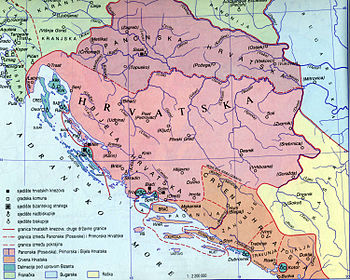

knez Branimir

O kralju
Nije dio dinastije Trpimirović, postao je knezom nakon pobune protiv Zdeslava, Trpimirova sina koji je bio bizantski štićenik, čime je prekinuta osvisnost o Bizantu.
Gradeći crkve i šireći područje Ninske biskupije, Branimir se priklonio papi od kojeg je hrvatska priznata kao samostalna država, ali on nije okrunjen zbog čega nije kralj
Mlečani za slobodnu plovidbu plačaju knezu Branimiru danak
Pronađeno je pet natpisa s Branimirovim imenom koji svjedoče o visokoj ranzini umjetničkog stvaralaštva i latinske pismenosti u hrvatskoj.
Za vrijeme kneza Trpimira
Promjene u teritoriju
Za vrijeme vladavine kneza Branimira vladao je mir, zbog čega nema nikakve teritorijalne razlike